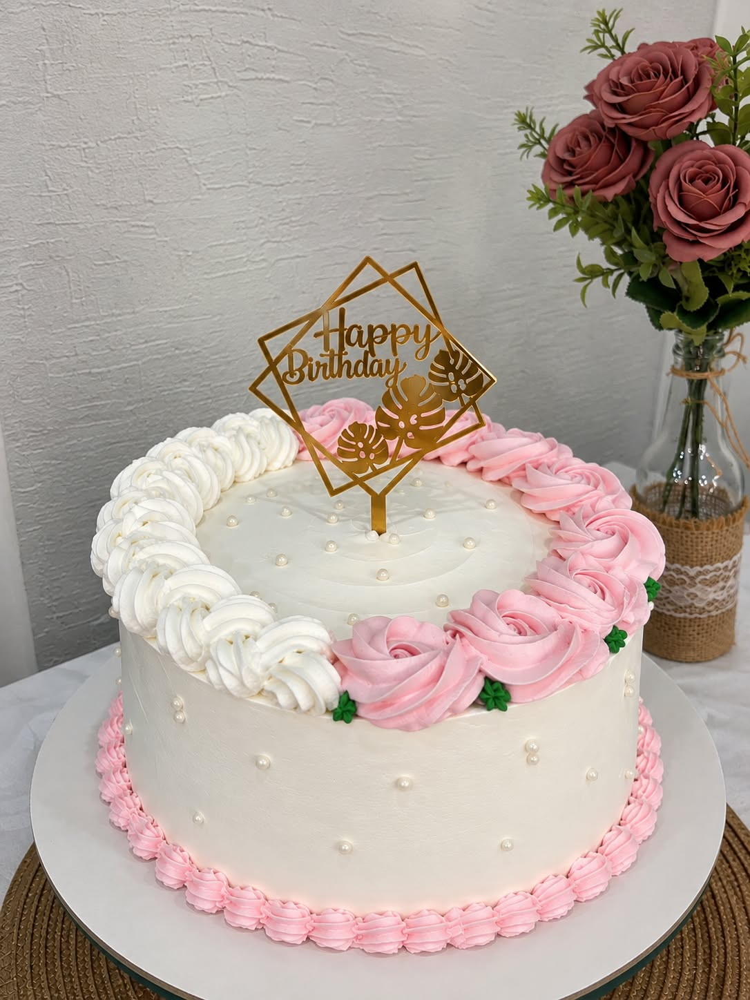
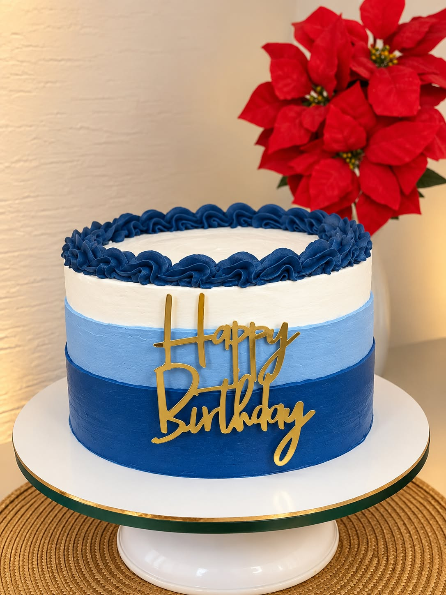

Delicadeza em cada doce, carinho em cada celebração.
Do primeiro desejo ao último detalhe, criamos bolos e doces que combinam com você e com a história que deseja celebrar.
Conheça nossos produtosNossos produtos


Vai casar?
Doces finos para compor a sua mesa e fazer parte de um dia cheio de significado.
Converse com a Joy sobre sabores, apresentação e os detalhes que vocês imaginam para a celebração.
Pedir orçamento pelo WhatsAppComo encomendar
Sua celebração começa com uma ideia. Vamos conversar sobre ela?
-
Conte sua ideia
Informe a data da comemoração, o produto desejado e a quantidade de pessoas.
-
Combine os detalhes
Converse com a Joy sobre sabores, decoração, disponibilidade e orçamento.
-
Confirme sua encomenda
Após aprovar o orçamento, combine as condições de pagamento e o recebimento do pedido.
Celebrações que ganham sabor


Quem faz tudo isso acontecer
Por trás de cada doce, existe muito mais do que uma receita. Existe dedicação, carinho e o desejo de fazer parte de momentos especiais.
Essa é a Joy, o coração por trás de cada criação. Cada detalhe é pensado para transformar pequenos momentos em doces lembranças.
Com carinho, Joy ♡Faça seu orçamento
Conte sua ideia para a Joyce e consulte sabores, valores e disponibilidade para sua celebração.
Falar com a Joyce pelo WhatsApp